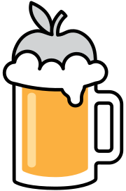

ShotPark
A Lightshot alternative for Mac. One hotkey to select a region, annotate it on the spot, and copy, save or share it.
Native on Apple Silicon and Intel, zero dependencies, lives quietly in the menu bar.

brew install --cask chiyodad/tap/shotpark⌘⇧9 → drag to select → box, arrow, text, numbered stamps → mosaic over personal info → ⌘C to copy. Done!
Why a Lightshot / PicPick alternative?
Lightshot set the bar for quick screenshots: press a key, drag a box, scribble on it, copy. PicPick did the same for millions of Windows users (it's the default choice in Korea). The catch: PicPick has no Mac version at all, and Lightshot's Mac app is an Intel-only build that needs Rosetta on Apple Silicon — if it runs at all. ShotPark keeps that exact workflow and rebuilds it natively for the Mac with Swift and AppKit, with nothing phoning home.
Same muscle memory
Hotkey → drag → annotate → ⌘C. If you used Lightshot or PicPick, you already know how ShotPark works. The overlay appears in well under 100 ms.
Built for modern Macs
Universal native binary (Apple Silicon + Intel) using ScreenCaptureKit. No Rosetta, no Electron, no Java — a small Swift app with zero third-party libraries.
No cloud, no account
Lightshot's "upload to prnt.sc" button is intentionally absent. Captures go to your clipboard, your folder, or the app you pick. Nothing leaves the machine.
More annotation, not less
Everything Lightshot had, plus pixelate / blur, text extraction (OCR), stamps and signatures, filled shapes, and annotations you can move, restyle or erase later.
| macOS built-in | PicPick | Lightshot | CleanShot X | ShotPark | |
|---|---|---|---|---|---|
| Runs on a Mac | ● | ✕ Windows only | △ Intel build | ● | ● Universal (Apple Silicon · Intel) |
| Price | Free | Free for personal use | Free | Paid (US$29+) | Free · open source (MIT) |
| Annotate right where you captured | △ separate Markup window | △ separate editor | ● | ● | ● |
| Copy to clipboard by default | ✕ saves a file | △ setting | ● | ● | ● ⌘C or Enter |
| Pixelate / blur · extract text (OCR) | ✕ | △ pixelate only | ✕ | ● | ● |
| Text background (masking) · number · emoji stamps | ✕ | △ some | ✕ | ● | ● |
| Share straight to Claude · ChatGPT · Gemini · Slack · KakaoTalk | ✕ | ✕ | ✕ | ✕ | ● |
| No online upload (local only) | ● | △ optional | △ prnt.sc upload | △ optional cloud | ● no upload feature at all |
| English · Korean UI | ● | ● | △ | △ English | ● |
PicPick's ruler, color picker and whiteboard aren't in ShotPark; it focuses on region capture, annotation and sharing. Based on each product's public information as of October 2026 — tell us if something's off.
Features
One hotkey, one drag
Default ⌘⇧9. The screen dims; drag to select a region or click a window to grab it whole. Resize with handles, move by dragging inside, nudge 1 px with the arrow keys. Pixel dimensions are shown live.
Annotate right there
Arrows, shapes, text, numbers, stamps and blur, right where you captured. Move, erase or restyle anything afterwards.
Copy · save · share
⌘C to the clipboard, ⌘⇧C to pull out the text or a QR code, ⌘⇧P to pin it on screen, Beautify for a margin, shadow and rounded corners, ⌘S straight to your chosen folder as PNG, ⌘⇧S to Claude · ChatGPT · Gemini · Slack · KakaoTalk or the macOS share sheet.
Clipboard image history
⌃⌘V shows the last 30 images you copied — from any app — as thumbnails. Click to copy one again, drag it straight into another app. Stored only on your Mac.
Retina · multi-monitor
ScreenCaptureKit captures every display at its true resolution. Works the same with one monitor or five.
Your settings
Change the capture and tool shortcuts, the save folder, the save/copy behaviour, the 10 palette colours, Beautify and clipboard history in the settings window. Optional launch at login. A once-a-day check tells you in the menu when a new version is out. UI in English or Korean, following your macOS language.

Settings (⌘,). Click the hotkey box and press the combination you want; it applies immediately. Shortcuts for clipboard images, mosaic, extract text and pin, the save folder and save↔copy linking, the palette, Beautify (shadow · rounded corners) and clipboard history live here too. The app follows your macOS language (English or Korean).
Shortcuts
| Action | Keys |
|---|---|
| Start a region capture | ⌘⇧9 (changeable in settings) · menu bar icon |
| Clipboard images | ⌃⌘V |
| Pixelate / blur tool · extract text or QR · pin to screen (during a capture) | B · ⌘⇧C · ⌘⇧P |
| Select the whole screen | ⌘A |
| Pen / line / arrow / rectangle / ellipse / marker / text / number / emoji / eraser | P L A R E M T N S X |
| New line while typing text | ⇧↩ |
| Select (move / resize) mode | V or click the active tool again |
| Copy to clipboard and close | ⌘C or Enter |
| Paste an image as a stamp (e.g. a copied signature) | ⌘V |
| Save as PNG | ⌘S |
| Share menu | ⌘⇧S |
| Grab a whole window | Click the window instead of dragging |
| Nudge the region / selected annotation | Arrow keys (⇧ for 10 px) |
| Move / delete / re-edit an annotation | Drag / Delete / double-click (select tool) |
| Redo | ⌘⇧Z |
| Bigger / smaller text or stamp | ⌘+ / ⌘- |
| Rotate selected text or stamp (15°) | ⌘[ / ⌘] |
| Undo | ⌘Z |
| Cancel | Esc · right-click |
Install
Pick an install method
1) Homebrew (recommended)
brew install --cask chiyodad/tap/shotpark2) CLI — downloads the latest release → Applications → clears the quarantine flag → launches:
curl -fsSL https://shotpark.site/install.sh | sh3) Download — grab ShotPark-x.y.z.zip from the latest release, unzip it and move ShotPark.app into your Applications folder.
First launch: get past Gatekeeper — ShotPark is an open-source app without an Apple Developer signature, so the first launch is blocked as coming from an "unidentified developer". Use either method once; macOS won't ask again. Not needed for Homebrew, CLI or source builds.
Method A — one line in Terminal (most reliable):
xattr -d com.apple.quarantine /Applications/ShotPark.appMethod B — allow in settings: double-click the app once more to dismiss the warning, then open System Settings → Privacy & Security, scroll to the bottom and click "Open Anyway".
4) Build from source — all you need is the Xcode Command Line Tools.
git clone https://github.com/chiyodad/shotpark.git
cd shotpark
./build.sh --installAllow Screen Recording
On your first capture (⌘⇧9) macOS asks for Screen Recording permission. Here is what you'll see, in order:
① A system dialog titled Screen Recording: "ShotPark.app would like to record this computer's screen and audio", with Open System Settings and Deny buttons.
② In System Settings → Privacy & Security → Screen & System Audio Recording, a list of apps with toggles — turn on the ShotPark.app row.
③ Quit ShotPark from the menu bar icon and open it again. The dialog won't appear again for this build.
FAQ
Nothing happens when I press the hotkey
Screen Recording permission hasn't been granted yet. Menu bar icon → "Screen Recording permission…", enable ShotPark and relaunch the app. If another app already owns the same global hotkey, change the combination in settings.
macOS says the app "is damaged and can't be opened"
That's the quarantine flag attached to downloaded files. Clear it with xattr -d com.apple.quarantine /Applications/ShotPark.app (see install method 3) Download).
After updating, it asks for Screen Recording again
Expected. A new build with a different signature is treated by macOS as a new app, so it asks once more. Enable it and relaunch.
How does sharing to Slack / KakaoTalk / ChatGPT / Gemini work?
The image is copied to the clipboard and the file is handed to the app. Apps that accept files (like Slack) open their upload sheet immediately; apps that don't are simply brought to the front, so just paste with ⌘V. Without the ChatGPT / Gemini desktop app, the web app opens instead — paste there.
Scrolling (long) capture?
Not yet. For long web pages, use the browser's full-page capture (Chrome / Edge: ⌥⌘I → ⌘⇧P → "Capture full size screenshot"; Firefox: right-click → Take Screenshot → Save full page). If you need it for app windows, add a 👍 to this issue.
What about Intel Macs?
Supported. Since 1.9.2 the release is a universal binary (Apple Silicon + Intel): same zip, same install commands.
Can I share with an online link like Lightshot's prnt.sc?
No, and that's deliberate. Everything stays on your machine; sharing goes through the clipboard, files or the macOS share sheet only.
Is the app in English?
Yes. Menus, settings, tooltips and messages follow your macOS language: English by default, Korean when Korean is your primary language. You can also pick a per-app language under System Settings → General → Language & Region → Applications.